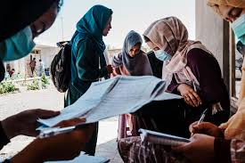
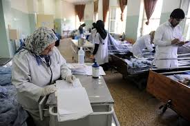
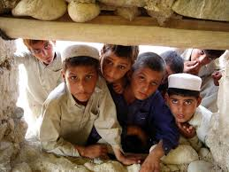
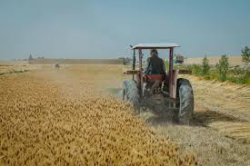

About Us
HI EVERYONE !
Welcoom to our website,
In here, we are tring our best to collect all the data about what is going on all around the wourld.
Acording to the last searches about Afghanistan that many of searchers asked if we could let them know:
- The setuation of Afghanistan?
- What is exactly going on there?
- And how or what would it be in the future?
This poject is made by "Zahra Ghafoory" the leader of our work.
We wish, now you can find your answers by the results we are giving you.
here are issues we are focusing on :
Education
Culture
Health
Technology
Women Empowerment

Youth
Agriculture
Education
Afghanistan is currently the only country in the world where secondary and higher education is strictly forbidden to women and girls over age 12.
The Taliban swept back into power on 15 August 2021 and swiftly began curtailing women’s rights.
Three years to the day after the fall of Kabul, the nation’s capital, at least 1.4 million girls have been deliberately denied access to secondary education because of the bans.
Including the girls who were already out of school before the Taliban’s reimposition of strict religious legal codes, there are now almost 2.5 million girls in the country deprived of their right to education, representing 80 per cent of Afghan school age girls. There has also been a decrease by over half of the number of students enrolled in universities since 2021, UNESCO said. As a result, the country will face a shortage of graduates trained for highly skilled jobs, which will only exacerbate development problems, according to the report.
Culture
The Taliban embrace cultural heritage Afghanistan’s rulers no longer want to smash up the country’s pre-Islamic riches
When the Taliban barrelled into Kabul in August 2021, the curators of Afghanistan’s national museum stashed away its pre-Islamic treasures. During the Islamists’ previous spell in power, the Taliban minister of finance led an axe-wielding wrecking crew to smash up thousands of the pre-Islamic artefacts bequeathed by Afghanistan’s staggeringly rich history. Determined to prevent a repeat performance, museum employees camped for nights on end in the battered 1920s Kabul villa that houses its collections.
#DoNotTouchMyClothes: We find out how Afghan women around the world used this hashtag to share photos of themselves in colourful traditional clothes in protest in response to pro-Taliban rally of women in Kabul - dressed all in black, full-veils, and long robes.
Sana Safi speaks to Dr Bahar Jalil who posted the very first picture, and to Sabrina Spanta – once a refugee, and now a fashion designer in the USA, inspired by Afghan women, and who recently starred on TV fashion show Project Runway.
Health
The sharp reduction in financial and technical development support for Afghanistan’s public health system since the Taliban takeover in August 2021 has severely harmed the country’s healthcare system. The lack of sufficient healthcare services has undermined the right to health for millions of Afghans and has left the population vulnerable to disease and other consequences of inadequate medical care. Women and girls have been disproportionately affected by the healthcare crisis, particularly because of Taliban abuses. The Taliban’s restrictions on women’s freedom of movement and employment with humanitarian and other organizations have gravely impeded women and girls’ access to health services, while bans on education for women and girls have blocked almost all training of future female healthcare workers in the country.
The collapse of the Afghan economy and the loss of hundreds of thousands of jobs after the Taliban takeover drove many Afghans into extreme poverty, leaving them unable to pay medical expenses, worsening their social determinants of health, and threatening rights essential for maintaining an adequate standard of living, including the right to food. The result has been life-threatening for many Afghans, including millions of children suffering malnutrition. Almost two-thirds of the Afghan population needed humanitarian aid by the end of 2023. Cuts to international humanitarian assistance in 2023, with more anticipated, and a longstanding drought have further threatened the availability and accessibility of adequate food and exacerbated the crisis.
Over the previous two decades, the Afghan government had depended on international development support from donors to fund essential services like primary health care, even as Afghans paid the majority of healthcare costs from their own pockets. The previous government’s own contribution to the public primary care system was negligible, leaving it vulnerable to collapse once aid was withdrawn. Donor development aid for Afghanistan’s public health system was approximately six times the government’s own expenditure on health, with rising insecurity and declining donor support after 2012 already causing staffing and supply shortages. After the Taliban takeover, the World Bank and other donor countries and institutions cut all development funding, including for health, although humanitarian aid temporarily increased in 2021-2022, only to face cuts in 2023. The sharp drop in development support sent a shock through the economy and the public health system; compounding the crisis, many Afghan healthcare professionals left the country or quit their jobs.
Humanitarian aid organizations have tried to make up for the loss of donor-provided public health funds, particularly in hospital support, however they cannot replace what had been provided for the public health system. With the decrease in funding for humanitarian assistance after 2022, aid organizations have shifted their focus toward immediate relief efforts only. Temporary support to public hospitals immediately after August 2021 prevented a total collapse, but aid organizations have also closed clinics due to a lack of funds, and local aid groups that cannot import their own supplies have reported shortages of medicines and equipment. Humanitarian assistance and exemptions to sanctions prevented a worse catastrophe in the first two years after the Taliban takeover; however, shrinking humanitarian aid now imperils the entire Afghan population.
Technology
Reimagining Afghanistan's Future Through Technology and Innovation
Afghanistan, a country long associated with conflict and political instability, is standing at the cusp of a digital revolution. Despite facing numerous challenges, there's a growing recognition that technology and innovation could be key drivers in reimagining and rebuilding the nation's future.
Technological Landscape in Afghanistan:
Historically, Afghanistan's technological infrastructure has lagged due to ongoing conflicts. However, recent years have seen a significant shift. As of 2023, the Afghanistan Telecom Regulatory Authority (ATRA) reports over 8 million internet users, a remarkable increase from just a few years prior. Mobile phone penetration has reached 90% in urban areas, though rural regions still face connectivity challenges.
The Rise of Tech Startups:
Afghanistan is witnessing a burgeoning startup ecosystem. Young entrepreneurs, often educated abroad, are returning with skills and a vision to foster change. Kabul, the capital city, is home to a growing number of tech startups focusing on everything from e-commerce to digital education platforms. These startups are not only creating jobs but are also offering solutions tailored to local needs.
Focus on Education and Digital Literacy:
A key aspect of Afghanistan's tech revolution is the emphasis on education and digital literacy. Initiatives like Code to Inspire, the first coding school for girls in Afghanistan, are breaking barriers. Moreover, universities are increasingly incorporating IT and digital skills into their curricula , aiming to equip the younger generation with the tools needed for a digital economy.
Challenges and Opportunities:
Afghanistan's journey from battlefield to cyberspace is laden with challenges. Limited infrastructure, a lack of skilled IT professionals, and security concerns are significant hurdles. However, these challenges also present opportunities for innovation. For instance, solar-powered internet solutions are being explored to overcome electricity shortages.
Government and International Support:
The Afghan government, realizing the potential of technology, has been working on policies to promote IT and innovation. International aid and partnerships are also playing a crucial role, with organizations like USAID and the World Bank funding various tech initiatives.
Conclusion:
Reimagining Afghanistan's future through technology and innovation offers a hopeful narrative for a country often defined by its struggles. The shift from battlefield to cyberspace signifies a transformative journey, one where technology is not just a tool for development but a catalyst for change. With continued support and investment, Afghanistan could emerge as a surprising hub of innovation in the region, offering a model of how technology can pave the way for rebuilding and resilience in post-conflict societies.
WomenEmpowerment
Just four years ago, a woman in Afghanistan could technically decide to run for President, attend university, or play sports.
Today, none of that is possible. Even before the Taliban took power in August 2021, Afghanistan ranked among the lowest countries in the world for gender equality. But there had been hard-won gains. Now, under the Taliban’s de facto rule, those gains have been erased and Afghanistan has become the world’s most severe women’s rights crisis.
Yet the fierce determination and resistance of Afghan women continues to burn – and inspire.
Despite near-total restrictions on their lives, they still find ways to run businesses and work on the front lines as humanitarian workers,
journalists and community leaders.
“Sometimes, I wonder how to remain hopeful in these dark circumstances,”
says Fariba (name changed), who had just started a degree when universities were closed to women.
“Nonetheless, I remain hopeful for the future and reassure myself that darkness will end soon,
and women and girls in our society will once again access opportunities for work, education and their basic rights.”
Afghan women’s rights under the Taliban
UN Women’s 2024 Afghanistan Gender Index, developed with European Union support, confirmed that the country is falling ‘catastrophically’ far behind on gender equality and women’s empowerment. Nearly 80 per cent of young Afghan women are not in education, employment or training. Not a single woman has a position in the de facto Cabinet or local offices. A complex patchwork of more than 80 edicts, directives and decrees introduced by the Taliban has directly and systematically targeted women’s rights and autonomy. They ban women from education after Grade Six; most professions; and from public spaces, including parks, gyms, and sports clubs.Youth
That was over 25 years ago, at the outset of the Taliban’s first stint governing Afghanistan from 1996-2001. Stanikzai and several other Taliban officials continually assured that a policy shift was imminent — but the Taliban never lifted the ban on women’s and girls’ education.
More than two decades later, with the Taliban in power once again, Stanikzai has reassumed his position as deputy minister of foreign affairs. With that familiar title has come familiar rhetoric regarding the need to reopen girls’ education.
But this time, the Afghan people understand the truth. They know the intervening years have failed to soften the Taliban’s stances — that the words of an official like Stanikzai don’t represent a new consensus within the Taliban. Afghans know that underneath the Taliban’s hollow promises, the group as a whole still exhibits the same obstinance toward popular reform that characterized their rule in the late 1990’s. To create a better future, Afghans cannot wait for the Taliban to see the light. We need to build it ourselves.
Agriculture
The Future of Food Security in Afghanistan
Posted By Esther Sperling on Mar 30, 2018 Climate change will not be kind to South Asia. Numerous studies show India and Bangladesh’s vulnerability to changes in sea levels and monsoons. Yet, Afghanistan is largely avoided. How does a country plagued with instability plan for climate change? In this two part series, I’ll discuss the challenge of governance and food security in Afghanistan and the impact of opium on achieving either.
Threats to Food Security in Afghanistan
Food security is commonly broken down into three factors; availability, accessibility, and utilization. Availability refers to the “supply side;” food production and stock. Accessibility refers to income and prices needed to access food. Utilization is about the nutritional intake and food preparation. Stability and consistency of the three components is critical for people to ensure food security. Afghanistan lacks consistency in all three areas, making it one of the most food insecure places in the world. The risk of food insecurity is exacerbated by two key variables; the ongoing conflict and the increasingly arid environment. The long term survival of the country will be determined by how these variables change.
Afghanistan has suffered almost constant intrastate armed conflict. The country saw multiple military coups in 1973 and 1978, and subsequent takeover by the Taliban from 1996-2001. Instability continued as the Taliban fought to regain control and the Afghan government floundered after the toppling of the Taliban in 2001 and installation of a democratic system by the U.S. coalition. The U.S. has about 15,000 troops in Afghanistan; attempting to build the stability, by training Afghan troops and targeting both Taliban and Al-Qaida holdouts. Yet, after over a decade and a half of war, the country remains unstable. The lack of stable governance means the population suffers from both lack of availability and access.
Beyond instability, Afghanistan is also a primarily arid environment. Naturally dry and warm, the country is made up of mostly rugged mountains with plains in the north and southwest. Land suitable for farming makes up about 20% of the country while almost 80% is permanent pasture. The environment makes cultivating crops difficult as both droughts and floods are common. Yet, almost 85% of the population is dependent on agriculture for a living. Some of the main products include wheat, sheep products, fruits and nuts, and, of course, opium.
Wheat is particularly significant staple crop; making up over 50% of their diet and large percentage of agriculture. While Afghanistan relies primarily on domestic wheat production, imports have started to make up a larger percentage of total supply as demand grows. Today, families spend over 60% of their budget on food, making them vulnerable to food price shocks.Climate change will add to the strain on Afghanistan’s agricultural sector. Climate models suggest that the country will become drier, with temperatures rising up to 4 degrees Celsius by 2060, and see increased frequency of extreme weather, both droughts and floods. This will lead to increased soil erosion and reduced water supply, which could cause increased crop failure and livestock starvation. Each year of subsequent drought will make it increasingly difficult for communities to bounce back.